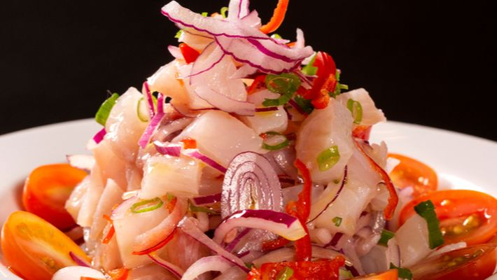

Ceviche De Tilápia

INGREDIENTES
- 500g de Filé de tilápia
- 1 cebola roxa grande
- 2 tomates sem sementes
- Cebolinha
- Pimenta do reino
- Sal
- 5 limões
- Azeite de oliva a gosto
MODO DE PREPARO
- Corte os filés de tilápia em pequenos cubos.
- Fatie a cebola finamente.
- Coloque o peixe e a cebola em um recepiente, acrescente o sal e misture bem.
- Acrescente o suco dos limões e leve a geladeira por cerca de 30min.
- Na hora de servir, acrescente o tomate cortado em cubinhos e a cebolinha e um fio de azeite.